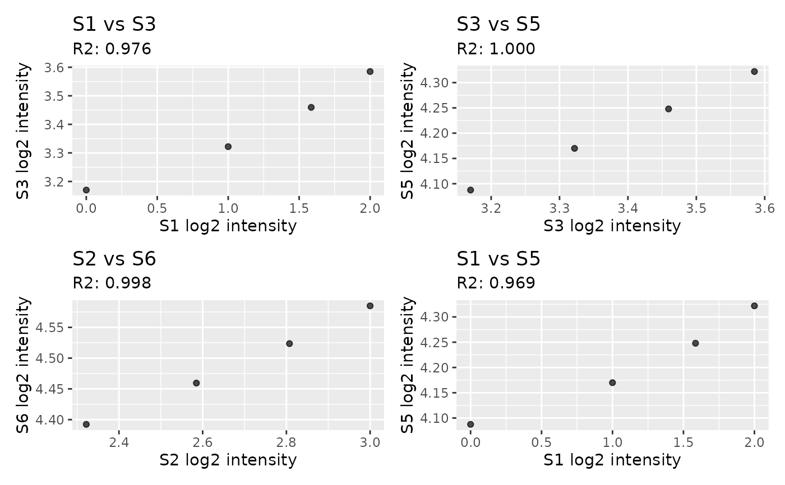

Plot Replicate Scatter Plots
plot_rep_scatter.RdRandomly draw replicate sample pairs and plot log2 intensity scatter plots. The plot title shows sample names, and the subtitle reports the R2 value.
Arguments
- exp
A
glyexp::experiment()object.- rep_col
Column name in
sample_infoused to define replicate groups. Samples with the same value in this column are treated as replicates (e.g.c("A", "A", "A", "B", "B", "B")indicates three replicates for sample A and three for sample B).- n_pairs
Number of replicate pairs to draw at random.
Examples
exp <- glyexp::toy_experiment
exp$sample_info$replicate <- rep(c("A", "B"), length.out = ncol(exp$expr_mat))
plot_rep_scatter(exp, rep_col = "replicate", n_pairs = 4)
